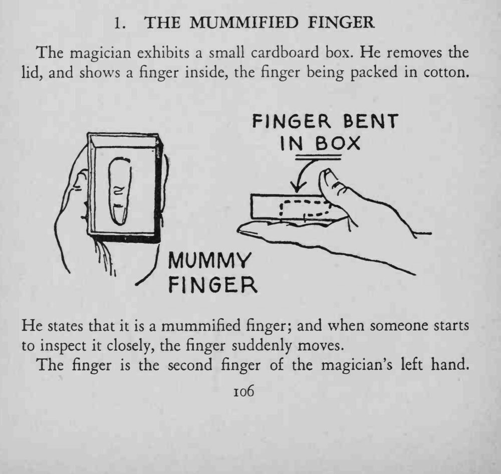
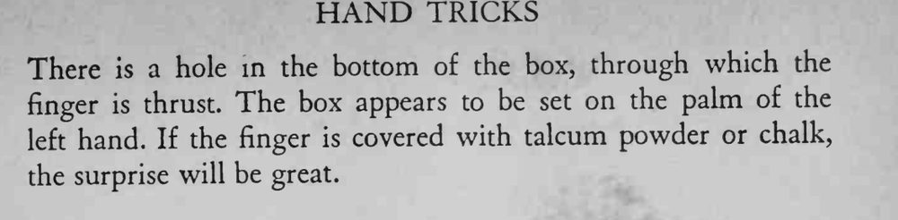

魔术师打开小纸盒，里面棉花包着一根“木乃伊手指”；有人凑近细看时，手指突然动了起来。
盒子要挡住指根，棉花要塞满；动作别太频繁，一次抽动就够。


The magician exhibits a small cardboard box. He removes the lid, and shows a finger inside, the finger being packed in cotton. He states that it is a mummified finger; and when someone starts to inspect it closely, the finger suddenly moves. The finger is the second finger of the magician's left hand. There is a hole in the bottom of the box, through which the finger is thrust. The box appears to be set on the palm of the left hand. If the finger is covered with talcum powder or chalk, the surprise will be great.